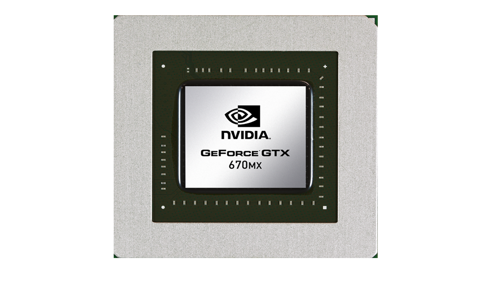

Your browser doesn't support the features required by impress.js, so you are presented with a simplified version of this presentation.
For the best experience please use the latest Chrome, Safari or Firefox browser.
nvidia Supercomputing
José Iván Santos González - Programación Paralela - 2013-2014

¿ Qué es NVIDIA ?
y esto … ¿ Tiene utilidad en supercomputación ?
¿Qúe ventajas tiene el uso de GPU frente al de CPU ?
- Relación potencia/precio
- Gran potencia de cómputo
¿ Nos olvidamos entonces de las CPU ?
- Dificultad elevada de programación
- Poca portabilidad de los algoritmos
- No apta para computación intensiva de memoria
¿y entonces qué hacemos?
Funcionamiento general del sistema
Arquitecturas GPGPU Nvidia
nvidia Tesla
Cabe destacar que todas las tarjetas gráficas actuales de nvidia de uso destina a computación de altas prestaciones reciben el nombre de Tesla aunque estén basadas en otras arquitecturas debido a que tesla fue la primera generación de tarjetas gráficas de NVIDIA para este propósito.
nvidia Tesla
Novedades
- Primera GPU creada para GPGPU
- Arquitectura basada en array de cores
- Combinación de pixel y vertex shaders en arquitectura única
- 3 niveles de memoria
nvidia Tesla
nvidia Tesla
- 8 procesadores escalares (SP)
- 1 Unidad de doble precisión (DP)
- 16 Kilobytes de Memoria Compartida
nvidia Fermi
- Lanzada en 2010
- 2ª Generación de gráficas Tesla
- Nombre en honor Enrico Fermi

nvidia Fermi
Novedades
- Nueva jerarquía de memoria
- Operaciones de doble precisión
nvidia Fermi

Aquí vemos la configuración de la arquitectura fermi, donde se puede observar lo que comentábamos de la cache L2 compartida por todos los SM.
La arquitectura Fermi posee un total de 16 SM de 32 cores cada uno. También existe una variante de fermi que posee 48 cores en cada SM. Esto da lugar a un total de 512/768 cores en cada una de las variantes de Fermi.
nvidia Fermi
nvidia Kepler
- Lanzada en 2012
- 3ª Generación de gráficas Tesla
- Nombre en honor a Johannes Kepler
nvidia Kepler
Novedades
- Dynamic Parallelism
- SMX
- Jerarquía de Memoria
nvidia Kepler
nvidia Kepler
nvidia Maxwell
- Lanzada en 2014 ?
- 4ª Generación de gráficas Tesla
- Nombre en honor a James Clerk Maxwell
Nvidia CUDA
- Compute Unified Device Architecture
- Compilador y herramientas de desarrollo
- Lanzado en 2006
- Programación sobre GPU
- Multiplataforma
Gracias por su atención
Preguntas
José Iván Santos González
Programación Paralela. 2013 - 2014